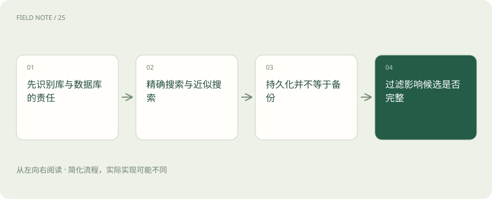
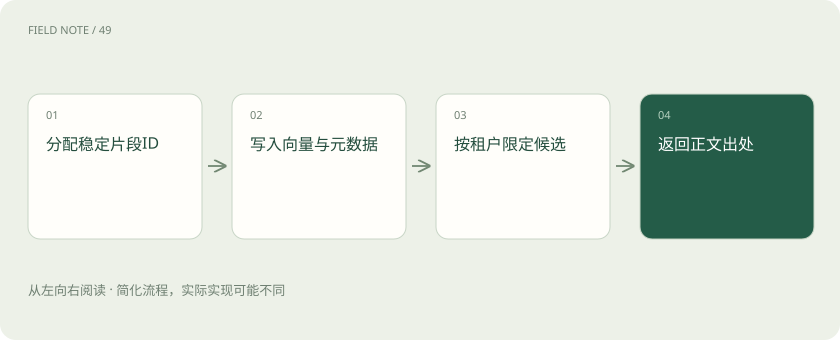

先说这篇在讲什么
向量工具帮助系统快速找到意思相近的资料，但搜索只是应用的一部分。工单还要保存正文、区分客户、支持修改删除，并在故障后恢复。本篇从这些实际工作出发，说明程序库和数据库各负责什么，以及如何验证选型。
先看一个具体例子
两个客户都有同名设备，查询既要找到维修方案，也必须只返回当前客户的工单。
遇到陌生概念，可以先读
打个比方，帮助理解
这是帮助理解的比方，实际过程以正文说明为准。
一图看懂

先问谁负责保存和管理
向量搜索负责找数字位置接近的记录。FAISS 是提供索引和搜索算法的程序库，通常由你的应用直接调用；它不是包含完整文档、权限和备份管理的数据库。Chroma 提供集合与记录等面向应用的数据接口。选工具前先列责任：正文放哪里，编号如何对应，谁检查权限，进程退出后如何恢复。售后系统若只比较一次搜索速度，可能忽略每天修改工单和服务故障时真正需要的能力。
搜索快一些可能漏一些
精确搜索会按选定规则比较目标范围的向量，可以作为核对答案的基准。近似搜索利用索引结构减少比较次数，速度可能提高，也可能漏掉本该靠前的记录。FAISS 有多种索引，部分需要先用样本训练，不能把一种索引的限制推广到全部。用同一批工单比较精确和近似结果，记录速度、内存和漏掉多少正确近邻。还须让距离算法符合嵌入模型的使用约定，否则调快参数也救不了比较规则错误。
能重启不代表能救回数据
持久化是把内存里的数据写到磁盘，使进程重启后仍能加载；备份是另外保留可恢复的副本，应对误删或磁盘损坏。保存 FAISS 索引文件时，还要保存编号到工单正文的对应表及必要业务字段。它们必须属于同一个时间点，否则搜索会找到编号，却读到另一版正文。验证办法是把备份恢复到新位置，实际查询几条已知工单，而不是只看文件是否存在、大小是否相近。
图解：处理机制

先搜再过滤为什么可能不够
元数据是正文之外的字段，例如租户、产品和日期。假设全库前十条都是甲公司的工单，搜索完成后再筛乙公司，就可能返回空白，尽管乙公司有相关材料。因此要明确工具如何结合条件搜索；自行使用 FAISS 时，可能需要分区或扩大候选数量。权限还应覆盖正文读取和缓存，不能只把页面上的引用藏起来。验收时放入不同公司的同名设备，并测试缺失字段、多标签和组合条件，确认数据不会串到其他客户。
修改删除从稳定编号开始
给每份工单及其片段分配稳定编号，写清它们属于哪一版正文。正文修改后通常需要重新计算向量；只改公开日期等字段则未必需要。删除时按对应表找齐所有片段，不能只删第一条。FAISS 各类索引对删除和编号的支持不同，需要核对所选类型。若写入成功但网络响应丢失，重试仍使用原编号，避免插入两个副本。外部摘要和答案缓存也要撤回，数据库删记录不会自动处理应用中的所有副本。
四种工具怎么放到同一张表
pgvector 是 PostgreSQL 的向量扩展，适合评估如何把向量搜索与已有业务字段放在一起。Milvus 是独立的向量数据库，需要考虑服务部署与资源管理。Chroma 提供集合和应用接入能力；FAISS 更侧重索引算法。它们没有一条从低级到高级的排名。把工单数量、条件过滤、并发请求、团队运维经验和恢复时限列成需求，再做同样条件的试验。已有数据库不代表一定选扩展，数据多也不代表任何独立服务都会自动更快。
迁移要搬记录及其含义
从 FAISS 换到其他工具，不能只复制一个索引文件。需要导出稳定编号、向量及其模型版本、正文位置和业务字段。先检查记录数、重复编号、缺失字段及向量长度，再用固定问题比较结果。不同距离或近似算法可能造成排名差异，应回到精确结果分析，不能见差异就认定丢数据。迁移期间明确新增和删除先写哪里，记录每个目标是否成功，失败后补写。尤其要核对删除事件，否则旧敏感工单可能在新库重新出现。
图解：版本与恢复机制
用一套小工单演练完整流程
先建两个客户各自的同名设备工单，查询时验证产品条件和客户隔离。再修改一条维修步骤，删除一条误录记录，确认新步骤出现而旧记录消失。随后重启服务，最后把备份恢复到另一位置，重复查询。恢复旧快照可能让已删资料回来，因此需要补放后续变更，必要时先应用独立删除清单。小样本证明流程能走通后，再逐步增加数据量和同时访问人数，分别观察搜索、正文读取和网络哪里拖慢。
放在一起对比
| 组件 | 输入与输出 | 限制与验收边界 |
|---|---|---|
| FAISS | 向量→近邻索引与搜索结果 | 正文、过滤与服务治理需应用负责 |
| Chroma | 记录与元数据→集合和查询结果 | 核查部署方式及过滤语义 |
| pgvector | 向量列→PostgreSQL内向量查询 | 与关系条件结合需评估查询计划 |
| Milvus | 向量记录→独立数据库检索 | 需承担独立服务部署和运维 |
读完先记住这一句
别踩这个误区
想一想
使用 FAISS 就拥有完整向量数据库了吗？
没有。FAISS主要负责索引和搜索，正文、业务字段、权限及恢复仍需另外设计。
关联阅读
资料与边界
本文为原创知识讲解。类比和图示经过简化；示例数字不代表实测或报价。整理日期：2026-11-05。文末列出对应技术的原始资料，具体功能与版本支持请以原文为准。
按完整目录逐篇阅读